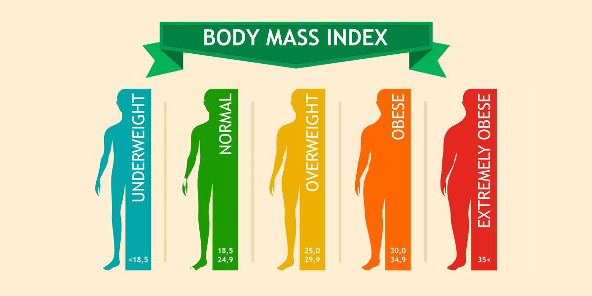

Welcome to Health Awareness
This website is dedicated to helping you stay indormed about the importance of good health, proper nutrition, and exercise.
Explore our tips and try out the BMI calculator to learn more about maintaining a healthy lifestyle.
BMI introduction
BMI is a measurement of a person's leanness or corpulence based on their height and weight, and is intended to quantify tissue mass. It is widely used as a general indicator of whether a person has a healthy body weight for their height. Specifically, the value obtained from the calculation of BMI is used to categorize whether a person is underweight, normal weight, overweight, or obese depending on what range the value falls between. These ranges of BMI vary based on factors such as region and age, and are sometimes further divided into subcategories such as severely underweight or very severely obese. Being overweight or underweight can have significant health effects, so while BMI is an imperfect measure of healthy body weight, it is a useful indicator of whether any additional testing or action is required. Refer to the table below to see the different categories based on BMI that are used by the calculator.
Risks associated with being overweight
Being overweight increases the risk of a number of serious diseases and health conditions.
Below is a list of said risks, according to the Centers for Disease Control and Prevention (CDC):
- High blood pressure
- Higher levels of LDL cholesterol, which is widely considered "bad cholesterol," lower levels of HDL cholesterol, considered to be good cholesterol in moderation, and high levels of triglycerides
- Type II diabetes
- Coronary heart disease
- Stroke
- Gallbladder disease
- Osteoarthritis, a type of joint disease caused by breakdown of joint cartilage
- Sleep apnea and breathing problems
- Certain cancers (endometrial, breast, colon, kidney, gallbladder, liver)
- Low quality of life
- Mental illnesses such as clinical depression, anxiety, and others
- Body pains and difficulty with certain physical functions
- Generally, an increased risk of mortality compared to those with a healthy BMI
Risks associated with being underweight
Being underweight has its own associated risks, listed below:
- Malnutrition, vitamin deficiencies, anemia (lowered ability to carry blood vessels)
- Osteoporosis, a disease that causes bone weakness, increasing the risk of breaking a bone
- A decrease in immune function
- Growth and development issues, particularly in children and teenagers
- Possible reproductive issues for women due to hormonal imbalances that can disrupt the menstrual cycle. Underweight women also have a higher chance of miscarriage in the first trimester
- Potential complications as a result of surgery
- Generally, an increased risk of mortality compared to those with a healthy BMI
Health Information
Tips for everyday healthy eating:
- Eat three healthy meals a day (breakfast, lunch, and dinner); it is important to remember that dinner does not have to be the largest meal.
- The bulk of food consumption should consist of healthy foods, such as fruits, vegetables, whole grains, and fat-free or low-fat milk products.
- Incorporate lean meats, poultry, fish, beans, eggs, and nuts (with emphasis on beans and nuts) into a healthy diet.
- Choose foods that are low in saturated fats, trans fats, cholesterol, salt (sodium), and added sugars; look at the labels because the first listed items on the labels comprise the highest concentrations of ingredients.
- Control portion sizes; eat the smallest portion that can satisfy hunger and then stop eating.
- Healthy snacks are OK in moderation and should consist of items like fruit, whole grains, or nuts to satisfy hunger and not cause excessive weight gain.
- Avoid sodas and sugar-enhanced drinks because of the excessive calories in the sodas and sugar drinks; diet drinks may not be a good choice as they make some people hungrier and increase food consumption.
- Avoid eating a large meal before sleeping to decrease gastroesophageal reflux and weight gain.
- Avoid rewarding children with sugary snacks; such a pattern may become a lifelong habit for people.
- Avoid heavy meals in the summer months, especially during hot days.
- A vegetarian lifestyle has been promoted for a healthy lifestyle and weight loss; vegetarians should check with their physicians to be sure they are getting enough vitamins, minerals, and iron in their diet.
Exercise Tips
- Thirty minutes of modest exercise (walking is OK) at least 3 to 5 days a week is recommended, but the greatest health benefits come from exercising most days of the week.
- Exercise can be broken up into smaller 10-minute sessions.
- Start slowly and progress gradually to avoid injury or excessive soreness or fatigue. Over time, build up to 30 to 60 minutes of moderate to vigorous exercise every day.
- People are never too old to start exercising. Even frail, elderly individuals (70-90 years of age) can improve their strength and balance with exercise.
- Almost any type of exercise (resistance, water aerobics, walking, swimming, weights, yoga, and many others) is helpful for everybody.
- Children need exercise; play outside of the home is a good beginning.
- Sports for children may provide excellent opportunities for exercise, but care must be taken not to overdo certain exercises (for example, throwing too many pitches in baseball may harm a joint like the elbow or shoulder).
- Exertion during strenuous exercise may make a person tired and sore, but if pain occurs, stop the exercise until the pain source is discovered; the person may need to seek medical help and advice about continuation of such exercise.
Body Mass Index (BMI) Calculator
BMI is a measure of body fat based on youer weight in relation to your height.